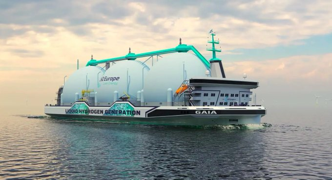

Week 18
H2 View: "Heliogen receives $89m from Woodside and US Department of Energy to unlock large-scale green hydrogen production"
H2 View: "Hydroplane remains on course for first hydrogen demonstration flight by 2023 with new US Air Force contract"
H2 Fuel News: "EDP Brasil is one of the leading companies in the country’s energy sector and will play a critical part in the Brazil green hydrogen production strategy. It will begin activities at a renewable H2 production unit located in São Gonçalo do Amarante, Ceará.. The EDP plant will power the electrolyzer using photovoltaic solar energy.. it is expected to have a production capacity of 22.5 kilograms per hour"
H2 View: "Bosch to develop smart modules for electrolysis units and ramp up hydrogen production"
H2 View: "Sunshine Hydro unveils $2bn hydrogen production mega-project in Queensland, Australia"
H2 View: "Toyota to supply hydrogen fuel cells for Mercedes-Benz buses"
And of course there is always ammonia, LOCH, and bunch of other stuff..
Comparing the capacity of that three-dome LH2 carrier to crude; 1 barrel of oil is 136 kg. Energy density of crude oil 10 kwh/kg. Small crude tanker size is 100K barrels. Liquid hydrogen has a an energy density of 2216 kwh/m3, ship carry capacity of 37,500m3 means,
100*1000 * 136 * 10 / 1e6 # gwh
Out[1]: 136.0
2216*37500 / 1e6 # gwh
Out[1]: 83.1
136 gwh vs 83 gwh capacity.. It's getting there..
H2 View: "Ionomr Innovations achieves crucial milestone with electrolyser durability test to produce cost-competitive green hydrogen"
H2 Fuel News: "Gilbarco Veeder-root Prepares For The Hydrogen Transport Revolution.. It is making available a suite of compression, dispensing and software solutions, allowing the creation of a network of renewable or low-carbon hydrogen refuelling stations around the world. The company is now at advanced stages of developing new technologies and creating partnerships to.. offer gaseous hydrogen to serve an ever-increasing number of hydrogen fuel-cell powered vehicles"
H2 View: "Shenzhen State Fuel Cell Corporation seeks $1 billion US listing"
H2 View: "Fortescue and Firstgas to investigate New Zealand’s green hydrogen distribution"
"WHO says 15 million deaths linked to Covid-19, almost three times the official toll"
Speedometer - Tomahawk #music
"@JeffSharlet
Few days shy of 50 and when I ask my super goth 13-year-old what they're listening to they tell me it's a band I probably don't know called The Cure"
New routine; after every gender related semi-scandal, we repeat "why did Al Franken have to resign?".
What happens to stawks? OMG!
Noooooooo oooo ooooooo
CNBC: "Fed raises rates by half a percentage point — the biggest hike in two decades — to fight inflation"
Al Jazeera: "Labour takes key London district from UK’s ruling Conservatives"
#Taiwan #FirstIslandChain
The Mandarin: "Defence minister Peter Dutton says Australia will have autonomous robotic undersea warfare capability in about four years."
Heimatschutzregiment!
Jane's Defense: "Germany stands up first homeland defence regiment"
Reuters: "Brazil's Lula says Zelenskiy 'as responsible as Putin' for Ukraine war"
Politico: "Pope says NATO may have caused Russia’s invasion of Ukraine"
Arab News: "Belarus launches ‘surprise’ military maneuvers.. Kyiv.. accused Belarus of planning to send troops into Ukraine to help Russia’s military operation"
WSJ: "Hungary has repeatedly said it could veto an oil package that doesn't give it enough time and financial assistance"
Who needs Russian oil when you can get 'Latvian blend'?
WSJ: "EU Proposes Ban on Russian Oil Imports"
WSJ: "Russia Steps Up Attacks on Ukraine Railways, Other Infrastructure"
Voltaire Net: "The Russian armed forces arrested Canadian General Trevor Cadieu in Mariupol.. [who] was apparently not on a mission for his government, but was in charge of [a] biolaboratory"
H2 View: "Everfuel to develop a hydrogen refuelling station for the Danish-German Fehmarn Belt"
H2 View: "ArcelorMittal carries out successful hydrogen-derived DRI [iron processing] in Canada.. [T]he company integrated green hydrogen into the production of direct reduced iron (DRI) providing a new market in which the Canadian hydrogen sector can explore. As part of the test, the company assessed the ability to replace the use of natural gas with green hydrogen within the iron ore reduction process. The first test, 6.8% of natural gas was replaced with green hydrogen during a 24-hour period, which is said to have contributed to a measurable reduction in carbon emissions"
H2 View: "Nel joins Norwegian network to develop hydrogen megaprojects in China.. As Norway continues to grow its hydrogen infrastructure, Nel ASA has joined a network of Norwegian technology companies aiming to take part in Chinese megaprojects"

"Revolutionary liquid hydrogen tanker to scale hydrogen adoption in the mobility market.. C-Job Naval Architects has.. co-designed [the vessel] with LH2 Europe.. [which] is.. equipped with three liquid hydrogen storage tanks with a total capacity of 37,500m3.. [the plan is] to initially deliver 100 tons per day (t/d) of green hydrogen and ramp up production to 300 t/d within three years, depending on demand"
Undoubtedly an H2 based economy will play into the strengths of some new players who can reach sunshine regions easier then they could reach oil/gas rich regions, and import energy cleanly through renewable fuels. US was the king of an earlier era, it had its own natural resources, and the military to get to OPP (other people's petroleum). But we cannot keep the existing system forever.. The world needs more energy, and climate change threatens to destroy us all. I believe renewable fuels will democratize the use of energy and make everyone richer. Power dynamics will change but that cannot be helped.
H2 Fuel News: "New green hydrogen deal between Plug Power and MOL Group.. The fuel cell manufacturer and oil and gas giant have teamed up for new Hungary-based plants"
H2 View: "Nova Scotia, Canada, will be transformed into a green hydrogen hub with EverWind Fuels announcing its intentions"
Multi-tower CSP with heat-engine.
Grated cheddar type cheese dries very fast - 2 hrs tops at 80 C.
Video on making pemmican. Runs dried meat through blender.
One idea is blending right after cooking, it would be easier, especially for poultry, one can mix anything in at that stage too, veg, fruit, spices in raw form. Then dry that whole mix; cooked pieces seperate easier during dehyd bcz previous blending already cut everything into little pieces.
"@anacondainc
📢 Did you hear the news from PyCon!? We are thrilled to introduce PyScript, a framework that allows users to create rich Python applications IN THE BROWSER using a mix of Python with standard HTML! Head to https://bit.ly/3LwOmrT for more information. 🧠 💥"
"Cancel the debt then change the system" - that comment from before sounded conflated, actions with political ideologies.. What is described would be the outcome, the long-run result of right-left back-and-forth oscillation, not one party doing it all.
Right-wing wouldn't remove functional programs. Look at Canada. They had a few conservative governments since the enactment of single-payer (Tommy Douglas!). Were they removed? No.
Actually the permanent policy of left should be to always cancel the student debt whenever they are in power. I bet that would encourage the right to abollish those programs pronto when they can; and that's fine too, the left can then later enact less market-intrusive programs, they'd remain (bcz they'd f-ing work).
This is the craziest so far
Spiderbait - Black Betty #music
Oh no, Tom Jones
Black Betty #music
We are on a Black Betty roll here..
Ram Jam - Black Betty #music
Caravan Palace - Black Betty #music
'Morgage stress'? But lower house prices would translate into lower rent prices in a few years.. Renters don't matter? In Oz home owners do not dominate as I understand even with historically low rates (bcz low rates create a flurry of activity pushing the home prices up so high most cannot afford them, even with low rates).
Rates can go up just like they can go down.. it's party of a cycle. There is nothing ultimately right or wrong about it..
The Mandarin: "[Oz] Reserve Bank governor Philip Lowe said the board believed it was the right time to start pulling back the support it has given to the economy during the pandemic."
There is no deying that. But Nazis also created some fringe benefits; would the US Apollo program be possible without Wernher von Braun? He developed his trade while building rockets for Nazis. If there is no space program there are no additional inno that comes from it. Scratch-resistant lenses, teflon, velcro.. Have a funky sport shoe with velcro? You can thank the Nazis for that. You can thank the Brits for.. some institutions here and there, fine.
"Britain's presence in some countries helped their democratic institutions"
Do I think Brits caused as much damage as Nazis? That's probably true... The partition in India alone caused 1 million deaths. That was done for strategic reasons, it didn't have to be done, but it was done so UK could meddle easier in the region's affairs. Tally it all up maybe you could reach the number of Jews killed by the Nazis.
Current cultural and genetic make-up of Anatolia is overwhelmingly local. Similar people, culture have been in the land for at last ten thousand years, not a few hundred, or even thousand. They are not foreigners in their own land. Nationalists are deluded.
For the outers having the Turkist ideology active in Anatolia was useful; it reinforced an 'outpost' mentality among the locals. Followers of the ideo foolishly believe they 'just' arrived, right? Hence they are constantly 'fighting to hold on to their new home land', they see everyone around them as enemies. That is useful for the outers, here is a guy on guard, fearing every near neighbor, well then they would be more willing to ask 'friendly' outers for help, include them in their affairs more, wouldn't they?
Al Monitor: "Israel's Liberman talks wheat, strategy in visit to Azerbaijan"
Al Monitor: "Gantz says Israel still coordinates with Russia on Syria.. Israeli Defense Minister Benny Gantz discussed Israel's delicate strategic balance between Ukraine, Russia and Iran in an exclusive podcast interview"
WION: "Even as energy shipments to Europe remain uncertain due to ongoing hostilities, Russian energy giant Gazprom declared a large increase in exports on Sunday. In the first four months of 2022, Russia's gas shipments to China increased by as much as 60% compared to the same period previous year"
Politico: "[Chancelor] Olaf Scholz holds off on Ukraine visit, citing diplomatic snub.. Berlin didn't take kindly to Kyiv's refusal to welcome the German president last month"
Reuters: "[5/2] Chinese carrier sails through waters near Okinawa, Japan says"
Stripes: "[4/27] China protests another 'routine' US Navy transit through Taiwan Strait"
It was an obvious bullshit story. But MSM lept it up. Suckaz.
"Ukraine admits ‘Ghost of Kyiv’ fighter pilot is a myth"
WSJ: "With war in Ukraine upending global grain trade, other countries scramble to fill the gap in supplies, but soaring prices threaten to worsen food insecurity in poor regions"
India & Germany sign key Climate, Green Energy & Hydrogen pacts as PM Modi visits Berlin https://t.co/H3t6Of0UaL
— Republic (@republic) May 2, 2022
"@Newslogic_in
India Germany Ink Pact On Green Hydrogen During Modi's Berlin Visit"
Modi - Scholz press briefing, talked about green H2 cooperation, creation of green H2 taskforce, and 10 billion euros aid from DE to IN for green tech.
European H2 Backbone - Updated Version
FGSZ: "[T]he European Hydrogen Backbone (EHB) initiative presents an updated version of its vision for a dedicated hydrogen transport infrastructure across Europe. The group proposes a hydrogen network of 39,700km by 2040, with further growth expected after 2040. This grid connects 21 European countries"
Bloomberg: "Kuwait Seeks to Invest $750 Million in Pakistan Projects.. [A Kuwait company].. and Pakistan [KIC] have applied for a digital bank license and proposed a hydrogen plant and two smart cities"
Upstream: "BP is making steady progress with plans to produce renewable fuels and green hydrogen at a former oil refinery site in Kwinana, Western Australia... [Justin Nash, Senior Mgr says] 'We're targeting some of the best use cases for hydrogen, and that's places where it’s used today, industrial processes feedstock for chemicals, opportunities for decarbonised heat and energy that's currently being fulfilled by natural gas,” Nash explained. Transport, heavy duty long haul municipal fleets, waste trucks, community buses are all potential transport demand sources. And then with Kwinana’s access to fantastic pipeline infrastructure will have the opportunity to support WA’s target of 10% hydrogen blending [in the state’s gas grid] by 2030'"
Ideally homeowner bought home to live in, for a while. But then homes become "financial assets", expectations change.
That was shared as a 'pessimistic forecast' because it would be, for homeowners?
Fin Anchor, ABC Oz: "Reserve Bank put out a forecast stating that if they were to lift rates by 2%, then it could lead a 15% in drop on property prices over a few years"
Nice amateurish film, enjoyable scenery, with some scifi effects.
THE GRID - Sci-Fi Short Film
"Bourbon and beans, an explosive mix". Noted. #stvff
That guy totally looks like Saddam #stvff
![[-]](twimg/FRruCr0WUAAbSU9.png){kind=link}
Hadn't seen S Trek V The Final Frontier before.. Not bad for its time. #stvff
"Buck Sexton - even porn stars think his name is fake" - Gutfeld. That's funny
Taking back control
"UK set to impose direct rule on British Virgin Islands as premier faces cocaine charges"
That crowd is bunch of empire- self-serving gaslighters. They dont care about liberty, or free speech, all they care about is gaining influence to do their weirdo shit.
Caitlin Johnstone: "MintPress News happens to have published critical journalism about PayPal itself in the past, like the articles it published in 2018 by Whitney Webb documenting the way shady PayPal-linked billionaires Peter Thiel and Pierre Omidyar have advanced the interests of the US empire and facilitated imperial narrative control, or [how] from 2016 on how the company blocks Palestinians from opening accounts while showing no such bias against illegal Israeli settlers"
NYT: "[Reshare, Thiel interview, 2017] Even if you appointed a whole series of conservative Supreme Court justices, I’m not sure that Roe v. Wade would get overturned.. I don’t know if people even care about the Supreme Court"
US National News: "Leaked Supreme Court document suggests vote will overturn Roe v. Wade, Politico reports"
Arab Nationalism could be a threat for France I guess through Algeria, Morocco, so they wanted it 'handled' through Israel.
The National News: "Israel had long wanted a nuclear weapon of its own, but was isolated diplomatically in the years after its founding in 1948. But by the mid-1950s, that had changed. Western powers were so concerned at the rise of Arab nationalism, and in particular the leadership of Gamal Abdel Nasser, that they conspired in 1956 to use Israel to attack Egypt and bring down Nasser. That plan failed, but it began a long association between the West and Israel.
It was France, in particular, enraged by the failure in 1956, that began building Israel’s bomb. By the end of the 1950s, there were hundreds of French scientists and technicians living in Dimona, teaching Israelis how to master the nuclear fuel cycle..
In the years since, the Israelis openly lied to the United States during inspections, supported brutal regimes like Apartheid South Africa in order to get its hands on materials, conducted test explosions in violation of international treaties, spied on allies and censored the press at home. When a disgruntled technician, Mordechai Vanunu, told the world Israel had nuclear weapons in 1986, he was drugged by Israeli agents, kidnapped and jailed for nearly 20 years after a secret trial"
China-Pakistan nuke share is widely known. France-Israel rel is interesting.. What did FR have to gain from that?
From an earlier share on nuke tech; Russia gave nuke tech to China and India. One viewpoint seeks clues for RU-CH rivalry, but when RU could withhold one of the most destructive weapons ever invented, they didn't even blink an eye and chose to share - just gave it away to those two countries. They wanted strong neighors IMO to stand together with towards the outside, rather than weak neighbors they could lord over inside. RU,CH,IN, likely feel more threathened from outsiders than eachother.. That nuke share needs to figure into every analysis on the region.
WION: "Russia's foreign minister says May 9 not a relevant date for Ukraine operations"
A new gigawatt-scale electrolyser manufacturing plant will be developed in #Texas, US, to support the creation of a 60GW #hydrogen hub. #HydrogenNow #H2View https://t.co/uc8m343nwk
— H2 View (@h2_view) April 28, 2022
H2 News: "Canadian Aboriginal community explores hydrogen fuel plant deal"
H2 Fuel News: "The US Department of Energy’s Loan Program has issued a $504.4 million conditional debt financing commitment for what would become the largest green hydrogen production and storage facility in the world... The H2 hub.. will be located in Delta, Utah."
H2 News: "MOL Group has revealed a new agreement with Plug Power aiming to develop one of Europe’s largest-capacity green hydrogen production facilities in Hungary"
H2 News: "Plug Power joint venture to develop a 15 tonne per day green hydrogen production project in the US.. A joint venture has been established between Plug Power and Olin Corporation"
H2 View: "Australian Government commits $288m to hydrogen hubs in Tasmania and South Australia"
F24: "Extreme heatwave scorches India’s wheat harvest, snags export plans"
"@germany_works
Bringing together 40 international companies and institutions, the AquaVentus project will feed the hydrogen produced on island Helgoland into a special H2 network on the mainland via a pipeline"
"@tixhonjm
[Elliott Company] Designs Compressor for Gas Pipeline Transport Including Hydrogen Blends Up to 50%"
"@CHEManager_EU
@Shell is the first company to sign an agreement to use the #HyTransPort #hydrogen pipeline in the Netherlands that will run from #Maasvlakte in the @PortOfRotterdam to Pernis"
"PetroChina building China’s first dedicated pipeline for green hydrogen The six-kilometre line will have a throughput capacity of 10,000 cubic metres per hour"

"SGN has secured funding to deliver a nationally strategic hydrogen transmission and storage project. In early April, it announced that it had received £29.9mn from Ofgem and gas distribution companies, allowing it to test the use of high-pressure pipelines for hydrogen transmission and storage as an option for net zero heating. The project, based at Grangemouth in Scotland, will be delivered in partnership with INEOS"
"@12TOZERO1
Some question why we need hydrogen pipelines for offshore renewables harvesting. Transport costs have been analysed by NREL and hydrogen pipeline is 1/8 th the cost of electricity cable"
Woke went broke - again
"'Batwoman' canceled at The CW"
Al Monitor: "Iran-Saudi tensions near end, Iraq PM says"
The person in charge looks like another one of those "regime change Democrats". I bet she is woke and likes battery-electric cars.
"The Department of Homeland Security is setting up a Disinformation Governance Board to try to counter the spread of false information. The board will focus on disinformation coming from Russia"
That Levy guy too - one shady fuck. He gave bad advice on Libya, and dabbled in Syrian affairs too according to some.
Bottom of his heart.. How sweet.
Wikileaks: "Sarkozy is the French politician who most supports the role of the United States in the world.. His nickname is 'Sarkozy the American' and his affinity for America is authentic and comes from the bottom of his heart"
Sarko was little stupid, an odd duck.. Certainly no Chirac. After his term he was dragged through the mud quite a bit, had the crap beaten out of him.
He forgot his country's future lies with the inner alliance, not meddling outers, and went ahead and helped topple the guy who could be useful for him / Europe, soon after that very same leader had declared intensions of opening up Libya and sign energy deals with Europe.
"Sarkozy played a role in Libya's destruction"
How does liveuamap determine occupied regions during coflicts? "[It] has a method to harvest, select, and curate social media information... Liveuamap assumes control by drawing a polygon around events and, given the large number of social media events it contains, is able to generate areas of control"
The RU advance is reverse-engineered from Liveuamap images; given two known pixel-coordinate mappings, can calculate lat,lon from image. In small areas it's close enough.
u.sm_ukraine()
Yea.. not looking good; Lyman is nearly inside that front line
![[-]](twimg/FRp3hwRWQAAS9k4.png){kind=link}
Just saw Ukranian guy on Al Jazeera, from the town Lyman near RU front, said he heard from ppl next town mil gave up, so the advance is now coming for him
Al Jazeera: "Eurozone inflation hits new high as growth slows amid Ukraine war"